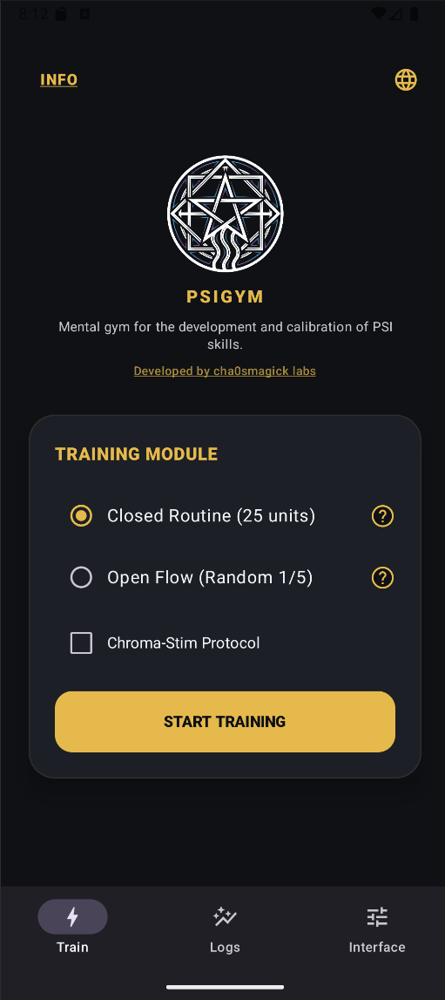
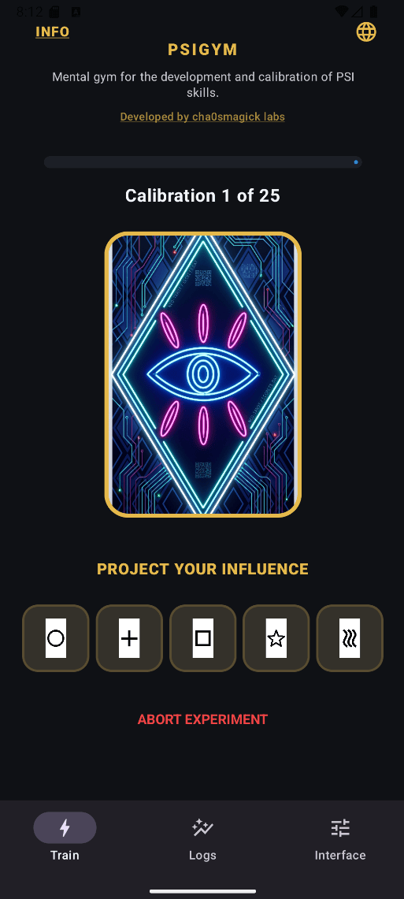
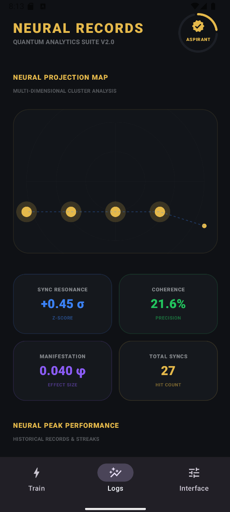

PSI GYM: Zener Cards & ESP NEW!
Train your intuition and extrasensory perception with professional Zener cards and advanced statistical tracking. 👁️



Can You Predict the Unknown? Unlock Your Latent Psychic Potential.
We all have gut feelings, but few know how to sharpen them into a reliable tool. PSI GYM is a professional-grade ESP (Extrasensory Perception) training environment designed to take intuition out of the realm of "luck" and into the realm of skill. Using the world-standard Zener card system—Circle, Cross, Waves, Square, and Star—this app provides a rigorous, distraction-free laboratory for your mind.
Whether you are a student of parapsychology, a chaos magician working on gnosis, or simply curious about the limits of your consciousness, PSI GYM offers the data and the discipline you need to grow.
Professional ESP Training Features
- Classic Zener Card Engine: Practice with the iconic 25-card deck (5 of each symbol). Our algorithm ensures true randomness, providing a valid baseline for statistical testing.
- Advanced Statistical Tracking: Don't just guess—measure. Track your hit rates, probability deviations, and historical performance to identify your "psychic streaks."
- Multiple Training Modes: Choose between "Open Deck" for learning and "Blind Testing" for serious verification of your intuitive accuracy.
- Minimalist Gnostic Interface: A clean, dark UI designed to minimize sensory interference and help you reach the focused state of mind necessary for ESP work.
- 100% Offline & Private: Your training data and results stay on your device. No cloud tracking, no accounts—just you and the cards.
Who Is PSI GYM For?
- Psychic Seekers who want a structured way to practice clairvoyance and precognition.
- Chaos Magicians using Zener cards as a tool for achieving and verifying altered states of consciousness (Gnosis).
- Parapsychology Enthusiasts looking for a portable, accurate version of the famous Duke University experiments.
Frequently Asked Questions
Are Zener cards effective for training intuition?
Yes. By isolating symbols and providing immediate feedback, Zener cards help you recognize the "feeling" of a correct intuitive hit versus a logical guess.
How does the statistical tracking work?
The app compares your actual results against the mathematical probability of chance (20%). This allows you to see if you are performing consistently above the average.
Is this app suitable for beginners?
Absolutely. PSI GYM is designed to be intuitive and easy to use, providing a professional environment for both beginners and advanced practitioners.
Why PSI GYM Is Your Essential Intuition Lab
- Scientific Foundation: Based on the proven methodology developed by Karl Zener and J.B. Rhine.
- Mobile Laboratory: Turn any moment into a training session—commutes, breaks, or dedicated ritual time.
- No Distractions: No ads, no social features, no fluff. Just pure psychic training.
The Portal to Your Intuition Is Open. Are You Ready to Enter?
Stop wondering if you have "the gift" and start training it. Download PSI GYM now and see what your mind is truly capable of.
One Skill, Three Timers, and a Score You Should Not Trust
Psi training apps live in an awkward position: the claim underneath them is weak, the practice underneath them is legitimate, and the score the app displays is the one part that does not measure anything. Almost every training scheme that produces a number is scoring familiarity with the apparatus. The parts that carry weight are unglamorous: one narrow task, a fixed daily slot, and a record that is written before the guess rather than after. What follows is how to use one of these apps so that the first month produces something you can keep, and what to do with the score in the meantime.
The claim underneath, and the part that is real
The claim is that repeated guessing against shuffled symbols trains a faculty. There is a long literature on this and almost none of it survives contact with a good design, which is a problem that has been analysed thoroughly in this library under the statistics of the standard deck and the version that starts from expectancy. The finding that does not need a stake in the argument is that the rig is not guessing, and a weak decline in guessing rate over repeated exposure is a training result in a laboratory, not a supernormal ability.
The part that is real is narrower and more useful. Attention held flat for four minutes, daily, is a trainable capacity with a large literature behind it, and it does not need the deck to be worth doing. The autonomic measurement side of the claim is the honest half, and plasticity as a description rather than a promise is the right register for the month-one expectation. If you want the sceptical version of the whole question, can anyone learn this at all is the entry point.
Why a score goes up when nothing improves
A percentage that climbs is the expected consequence of three things happening at once: you memorise the rig, you learn to feel the tell, and you get better at guessing under low stakes. None of those is the faculty the app claims to be building, and the number will improve whether or not anything else does. Thirty days of score keeping is the more useful record, and a proper daily schedule is the practical alternative to chasing a figure.
The fix is not to distrust the score but to demote it. Log it, do not aim at it. A schedule that produces a rising number is fine; a schedule aimed at producing one produces a rising number whatever happens, which is a false-positive generator by construction. Training intuition against the science is the careful version of the same point.
The three timers, and why one task
A workable arrangement is unglamorous: one task repeated, three sessions a day, each a few minutes. The task should be narrow enough that you are not choosing during it, and it should not be the task you most want to succeed at, because wanting to succeed is the one variable that ruins the measurement. The daily practice and the schedule sets out the arrangement in more detail.
The reason for one task is that it removes the decision, and the decision is what most training schemes are actually measuring. A session where you spend the first ninety seconds deciding what to do is a session about deciding. The gnosis exercise in four questions is a version of the same discipline in a different domain, and it is worth reading because it makes the point about pre-committed aims rather than open-ended effort.
Choosing between the training modes
Most apps of this kind ship three modes and differ on what they ask you to hold. One asks for a symbol, one for a picture, one for a feeling. The choice is worth making deliberately because it changes what your log will look like, and none of the three is better in the abstract. Symbols give you a clean hit rate and a low ceiling. Pictures give you a richer record and no score at all. Feelings give you the most usable training signal and the least transferable one.
The psychonaut material on altered states is the wider context for why this kind of training appeals to people who are also interested in the harder end of the practice, and the psychology of the altered state itself is the more careful treatment. Whichever mode you pick, the sensible move is to run one for a full month before changing it, because switching modes resets the log.
The shameless practice ladder
Getting better at this, in whatever sense of the word you end up using, is mostly a matter of doing it badly in front of a record. The ladder is short: first you guess confidently and get it wrong, then you guess and notice you were wrong, then you guess and can say why, then you notice the state before the guess rather than after. Most people stop on the second rung and conclude the method is defective.
Reprogramming your brain as a practice is the version of that ladder with more ambition attached, and it is worth reading for the framing rather than for the promises. This app's review is more measured than the marketing and worth your time before you pay for anything.
What the first month actually delivers
In month one the objective is not a result. It is a habit that survives a week you did not want to practise, and a log with enough entries that month two has something to compare against. That is the whole target, and it is achievable by almost anyone who reads the schedule and does it.
If the aim is gnosis rather than a deck, the first month has a different shape and the four-question protocol is the instrument for it. The gnosis family in this library covers the same ground at more length, including the structure of the claim, where the confirmation engine sits, and the first-timer's version, which is the one to read if you have never kept a record before.
What the app is training, and what it is only measuring
Read the app as a motor drill rather than a test. The daily score moves for at least three reasons that have nothing to do with knowing anything: you memorised the order of the rig, you learned to feel for the tell, and you got better at guessing. Only the third is even arguably skill, and it is a real one, but it is not the one the app claims. The longer treatment of that gap is in Can anyone learn ESP and in how the mind keeps a practice honest, which is the same epistemological problem wearing different clothes.
The training schedule is the part of the product that carries the claim, and it is worth reading as a written method rather than as a feature list. The best daily ESP schedule and thirty days of scored practice both set out a shape you could reproduce on paper with a deck, which is the honest test of whether you need the app at all. If you want the statistical background behind the deck itself, what a Zener card is and where the number comes from is the shortest route.
The four questions the app never asks
Does the score change when the answer changes, or only when the guessing changes? Could a colleague with a different deck have scored the same? What was the base rate on the day before you started? Would you have noticed a bad week? The gnosis protocol in four questions is the shortest written form of those, and belief as a tool rather than a cause is the longer version. Meditation and neuroplasticity covers the training half of the question, and the four questions protocol for clarity workings shows the same four questions applied to a decision rather than a card.
If the honest answer to the base-rate question is that you never counted one, the fix is a deck and a notebook rather than an app. Rune practice as the workable alternative and intuition as a trainable faculty both describe what a measurement-led practice looks like when you build it from scratch.
What the training is a sample of
Scores, timers and streak counters all look like progress and none of them is the thing being trained. The entries below cover the claims, the statistics, the training literature and the practice habits that hold up over months. Gnosis, Belief and Paradigm Shift Gnosis, Belief and Paradigm Shift Gnosis, Belief and Paradigm Shift Gnosis, Belief and Paradigm Shift Gnosis, Belief and Paradigm Shift Gnosis, Belief and Paradigm Shift The Mind Science of Practice The Mind Science of Practice The Mind Science of Practice.
None of these replaces the others. Read the one that answers the question you actually arrived with, and leave the rest for the next time you find yourself back at this page without a question.
If you want the pessimistic reading, it is all in the material on expectancy and the placebo floor and on the failure of the servitor variant of the same claim. Neither of those says stop. They say the discipline is the point and the apparatus is optional, which is a better position than the one the marketing takes.
Thirty entries from the library
- mind-science
-
The Mind Science of Practice: Beginner Path — Ritual, expectation and attention produce different effects. A beginner's route through what is measurable, what is placebo, and what neither explains.
Why Does Magic Work? The Placebo Question Answered Properly — An honest audit of the placebo argument against ritual practice: what it explains, what it misses, and the measurement discipline that settles the question for…
PSI GYM App Review 2026: Train Your ESP with
GLAMOUR MAGICK — A complete working guide to GLAMOUR MAGICK: what it is, the the mind science of practice structure behind it, and the full protocol. Includes step-by-step…
MEDITACIÓN NEUROPLASTICIDAD — A complete working guide to MEDITACIÓN NEUROPLASTICIDAD: what it is, the the mind science of practice structure behind it, and the full protocol. Includes...
The Mind Science of Practice — A complete working guide to the mind science of practice covering the mind science of practice. Includes step-by-step protocol, honest failure modes, and FAQ.
The Mind Science of Practice — A complete working guide to the mind science of practice covering the mind science of practice. Includes step-by-step protocol, honest failure modes, and FAQ.
The Mind Science of Practice — A complete working guide to the mind science of practice covering the mind science of practice. Includes step-by-step protocol, honest failure modes, and FAQ.
The Mind Science of Practice — A complete working guide to the mind science of practice covering the mind science of practice. Includes step-by-step protocol, honest failure modes, and FAQ.
The Mind Science of Practice — A complete working guide to the mind science of practice covering the mind science of practice. Includes step-by-step protocol, honest failure modes, and FAQ.
The Mind Science of Practice — A complete working guide to the mind science of practice covering the mind science of practice. Includes step-by-step protocol, honest failure modes, and FAQ.
The Mind Science of Practice — A complete working guide to the mind science of practice covering the mind science of practice. Includes step-by-step protocol, honest failure modes, and FAQ.
The Mind Science of Practice — A complete working guide to the mind science of practice covering the mind science of practice. Includes step-by-step protocol, honest failure modes, and FAQ.
The Mind Science of Practice — A complete working guide to the mind science of practice covering the mind science of practice. Includes step-by-step protocol, honest failure modes, and FAQ.
The Mind Science of Practice — A complete working guide to the mind science of practice covering the mind science of practice. Includes step-by-step protocol, honest failure modes, and FAQ.
The Mind Science of Practice — A complete working guide to the mind science of practice covering the mind science of practice. Includes step-by-step protocol, honest failure modes, and FAQ.
The Mind Science of Practice — A complete working guide to the mind science of practice covering the mind science of practice. Includes step-by-step protocol, honest failure modes, and FAQ.
Can You Train Intuition Like a Muscle? Science-Backed ESP
30 Days of Zener Training: My Score Went from
Best ESP Training Schedule: How to Structure Your Daily
Can Anyone Learn ESP? The Science Says Maybe (2026)
- reality-hacking
-
Gnosis: A Protocol for Telling It Apart From Three — Gnosis is routinely confused with intensity, self-confirmation and vivid imagination. Four questions, applied in order, separate them reliably.
The Neural Grimoire: What Chaos Magick Can and Cannot — Reprogramming is a software metaphor borrowed by a brain that has no source code. What survives the borrowing, and what the plastic parts actually respond to.
ABRAXAS — A complete working guide to ABRAXAS: what it is, the gnosis, belief and paradigm shift structure behind it, and the full protocol. Includes step-by-step...
ADVOLUNTRAPRAEM — A complete working guide to ADVOLUNTRAPRAEM: what it is, the gnosis, belief and paradigm shift structure behind it, and the full protocol. Includes...
ALFA — A complete working guide to ALFA: what it is, the gnosis, belief and paradigm shift structure behind it, and the full protocol. Includes step-by-step...
Gnosis, Belief and Paradigm Shift — A complete working guide to gnosis, belief and paradigm shift covering gnosis, belief and paradigm shift. Includes step-by-step protocol, honest failure...
Gnosis, Belief and Paradigm Shift — A complete working guide to gnosis, belief and paradigm shift covering gnosis, belief and paradigm shift. Includes step-by-step protocol, honest failure...
Gnosis, Belief and Paradigm Shift — A complete working guide to gnosis, belief and paradigm shift covering gnosis, belief and paradigm shift. Includes step-by-step protocol, honest failure...
Gnosis, Belief and Paradigm Shift — A complete working guide to gnosis, belief and paradigm shift covering gnosis, belief and paradigm shift. Includes step-by-step protocol, honest failure...
Gnosis, Belief and Paradigm Shift — A complete working guide to gnosis, belief and paradigm shift covering gnosis, belief and paradigm shift. Includes step-by-step protocol, honest failure...
Gnosis, Belief and Paradigm Shift — A reference table for claims about belief, expectancy and reality: what the evidence covers, what it does not, and how to keep an occult log that does not…
Gnosis, Belief and Paradigm Shift — A complete working guide to gnosis, belief and paradigm shift covering gnosis, belief and paradigm shift. Includes step-by-step protocol, honest failure...
The Witch-King: Building a Servitor That Holds Authority Instead — The witch-king is three different things wearing one name. Here is which one you can actually build, what a servant is for, and the design sheet for an…
- psychonaut
-
Infusing Consciousness Into a Servitor: What the Phrase Buys — Infusing consciousness is the most anthropomorphic claim in servitor craft. Here is what the phrase actually describes, why the feeling of a person is an…
Psychonautics and Altered States — A complete working guide to psychonautics and altered states covering psychonautics and altered states. Includes step-by-step protocol, honest failure modes,...